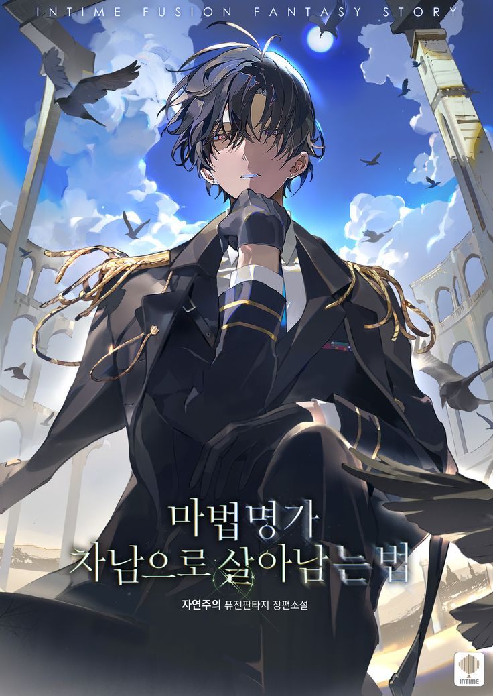
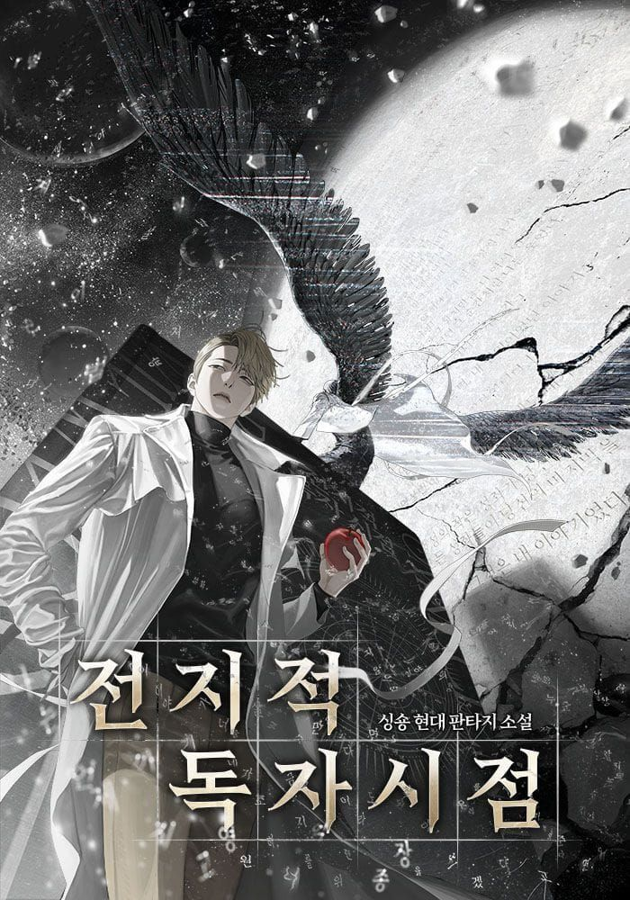

테마 게시판
내 게시판
✨ 오늘의 추천 작품 ✨
데뷔 못하면 죽는 병 걸림
 4.8
4.8
4년차 공시생, 낯선 몸에 빙의해 3년 전으로 돌아왔다.
그리고 그의 눈앞에 나타난 갑작스러운 상태창의 협박! ...

마법명가 차남으로 살아남기
 4.7
4.7
푸른 빛이 도는 검은 독액이 눈앞에서 흔들렸다.
형이 부드러운 미소를 지으며 나긋하게 말했다. “지금 ...

전지적 독자 시점
 4.8
4.8
[오직 나만이, 이 세계의 결말을 알고 있다.]
무려 3149편에 달하는 장편 판타지 소설, '멸망한 세계 ...
괴담에 떨어져도
출근을 해야 하는구나
 4.8
4.8
소중한 연차까지 내고 갈 정도로 좋아하던
'어떤 현대판타지' 팝업 이벤트. 그리고 그날, 그 현판 ...